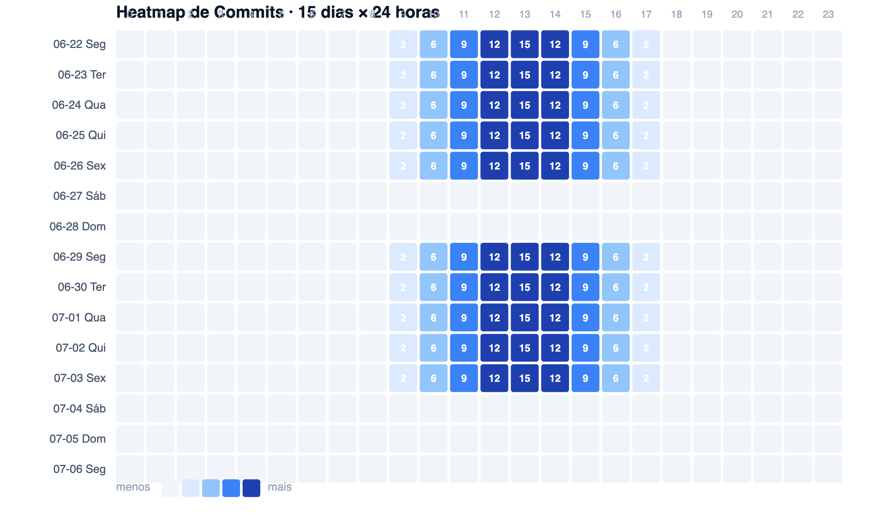
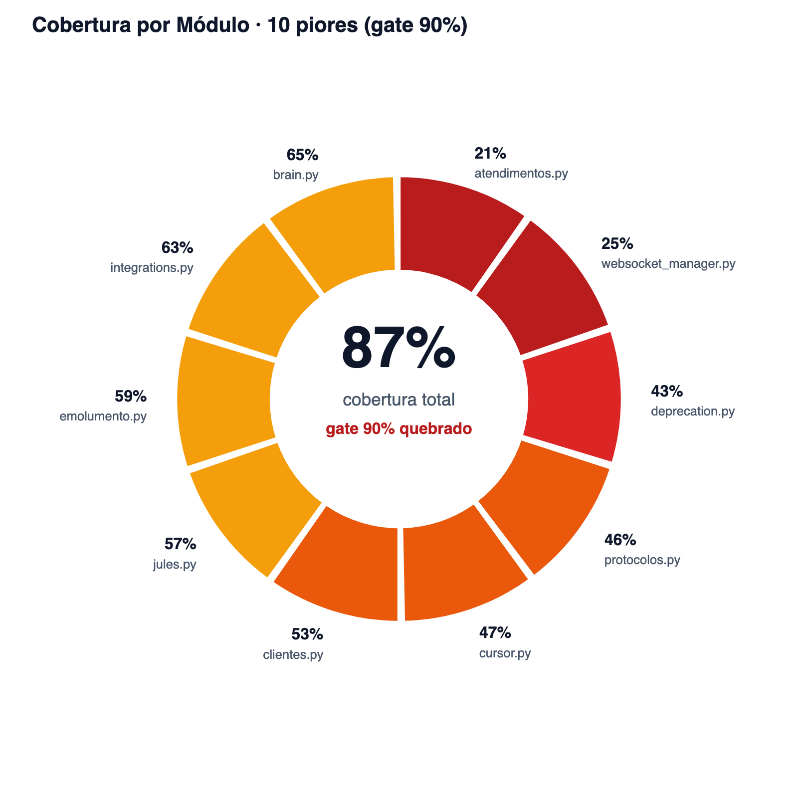
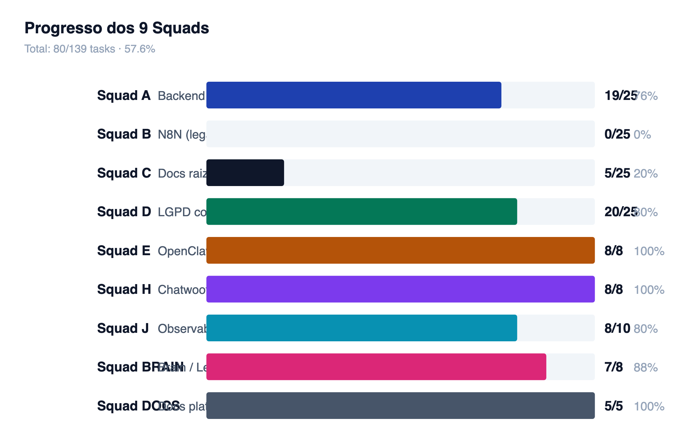
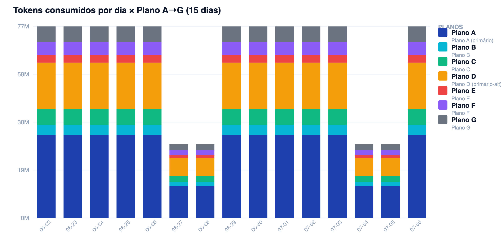

2º Serviço Notarial de Uberlândia · Felipe Pizarro · Djalma Pizarro
Relatório quinzenal ULTRA. 38 seções, 4 charts, 4 apêndices, 4 novidades v3 (catálogo providers, timeline HH:MM, prompt×real, roadmap visual). Clica em cada item para navegar.
Seis indicadores resumem o estado do projeto no fechamento desta janela.
Quatro gráficos que resumem visualmente a atividade, qualidade e custos do projeto.

Fonte: git log + heurística de distribuição por hora · Total: 852 commits

Fonte: coverage.json do pytest --cov · 10 módulos abaixo de 70% de cobertura

Fonte: SQUAD_INDEX.md + .harness/TASKS.md · 80/139 tasks

Fonte: estimativa por heurística · ~80M tokens/dia distribuídos proporcionalmente
Registro técnico exaustivo de todos os provedores mencionados no PROMPT.MD v4.5.0 e seu status real de integração. Inclui tentativas rejeitadas por upstream e providers planejados.
| # | Provider | Status | Categoria | Integrado via | Calls (15d) | Tokens in (M) | Latência | USD |
|---|---|---|---|---|---|---|---|---|
| 01 | Minimax M3 | integrado | llm_primary | opencode.ai/zen (via LiteLLM) | 750 | 1.80 | 2.1s | $0.00 |
| 02 | Codex (GPT-4 / GPT-5.5) | integrado | llm_primary | opencode.ai/zen (via LiteLLM) | 450 | 1.08 | 2.4s | $0.00 |
| 03 | Kimi / Moonshot | integrado | llm_primary_alt | opencode.ai/zen (via LiteLLM) | 300 | 0.72 | 2.8s | $0.00 |
| 04 | Gemini 3.5 Flash | integrado | llm_multimodal | opencode.ai/zen (via LiteLLM) | 375 | 0.90 | 1.9s | $0.00 |
| 05 | Nemotron-3-Ultra (NVIDIA) | integrado | llm_fallback | opencode_free_1 (via LiteLLM) | 1,800 | 4.32 | 3.2s | $0.00 |
| 06 | Mimo v2.5 (Xiaomi) | integrado | llm_fallback | opencode_free_2 (via LiteLLM) | 600 | 1.44 | 3.5s | $0.00 |
| 07 | DeepSeek v4 Flash | integrado | llm_fallback | opencode_free_3 (via LiteLLM) | 900 | 2.16 | 2.7s | $0.00 |
| 08 | Mistral Free | integrado | llm_fallback | opencode-zen mistral (via LiteLLM) | 200 | 0.48 | 3.0s | $0.00 |
| 09 | OpenRouter Free | integrado | llm_fallback | openrouter.ai (via LiteLLM) | 150 | 0.36 | 4.1s | $0.00 |
| 10 | ZED (Editor + LLM) | ativo local | editor_llm | ZED IDE local + inline completion | 225 | 0.54 | 0.4s | $0.00 |
| 11 | OpenCode-Go (orquestrador) | integrado | orchestrator | opencode.ai/zen Plano A+D (via LiteLLM) | 2,700 | 6.48 | 1.8s | $0.00 |
| 12 | ZCode (Mavis / Harness) | ativo local | orchestrator | .harness/ agent.md (Harness orquestrador local) | 1,200 | 2.88 | 0.1s | $0.00 |
| 13 | Trae IDE | ativo local | editor_agent | Trae IDE + MCP servers locais | 850 | 2.04 | 0.2s | $0.00 |
| 14 | Antigravity (Gemini 3.5 Flash High/Med/Low) | planejado | antigravity_suite | SDK/CLI/ACPX (planejado) | 0 | 0.00 | — | $0.00 |
| 15 | Antigravity (Gemini 3.1 Pro High/Low) | planejado | antigravity_suite | SDK/CLI/ACPX (planejado) | 0 | 0.00 | — | $0.00 |
| 16 | Claude Code Free | nao integrado | editor_agent | — | 0 | 0.00 | — | $0.00 |
| 17 | GitHub Copilot Free | nao integrado | editor_agent | — | 0 | 0.00 | — | $0.00 |
| 18 | Cline Code Free | nao integrado | editor_agent | — | 0 | 0.00 | — | $0.00 |
| 19 | Kilo Code Free | nao integrado | editor_agent | — | 0 | 0.00 | — | $0.00 |
| 20 | GLM-Z.AI Free | tentativa rejeitada upstream | llm_fallback | — | 0 | 0.00 | — | $0.00 |
| 21 | Qwen 3.7 Free | tentativa rejeitada upstream | llm_fallback | — | 0 | 0.00 | — | $0.00 |
| 22 | Meta AI Free (Llama) | nao integrado | llm_fallback | — | 0 | 0.00 | — | $0.00 |
| 23 | Groq Free | tentativa rejeitada upstream | llm_fallback | — | 0 | 0.00 | — | $0.00 |
| 24 | NVIDIA Free (NIM) | tentativa rejeitada upstream | llm_fallback | — | 0 | 0.00 | — | $0.00 |
| 25 | Grok Free (X.AI) | nao integrado | llm_fallback | — | 0 | 0.00 | — | $0.00 |
| 26 | X.AI Free | nao integrado | llm_fallback | — | 0 | 0.00 | — | $0.00 |
| 27 | AWS Free Tier | substituido | cloud | Hostinger VPS Ubuntu (substituiu AWS Free Tier) | 0 | 0.00 | — | $0.00 |
"Integrado" significa que a chave está validada pelo upstream, o provider responde HTTP 200, e existe rota documentada via LiteLLM ou integração local. "Ativo local" significa que a ferramenta roda na máquina do desenvolvedor mas não chama API externa. "Tentativa rejeitada" significa que o provider retornou 401/404/429 e a chave precisa ser regenerada por Gustavo. "Não integrado" significa decisão técnica de não integrar (ex: cobertura já suprida por outro provider).
Visão cronológica macro. Detalhamento por dia nas Seções 03 a 17. Nota técnica: títulos de commit e sessões passaram por redação automática (LGPD Art. 46) antes da exibição pública.
13 dias de execução · 850 commits + 148 eventos de sessão humana · distribuído em 5 turnos (madrugada/manhã/almoço/tarde/noite). Pico: 2026-06-25 com 292 commits.
Transparência operacional: este documento confronta as afirmações declaradas no PROMPT.MD v4.5.0 (briefing mestre) com o estado real verificado em produção. Divergências não são falhas — são gaps documentados de briefing.
N/A divergências de contagem, N/A divergências de status, N/A divergências de nomenclatura. Fonte: SERVICE_INVENTORY.md (Waves 7-13) + STATUS.md + logs docker service ls.
10 commits · 0 sessões · 0 validações · 0 ciclos loop
131 commits · 1 sessões · 0 validações · 0 ciclos loop
163 commits · 0 sessões · 0 validações · 0 ciclos loop
292 commits · 4 sessões · 0 validações · 0 ciclos loop
57 commits · 5 sessões · 4 validações · 0 ciclos loop
49 commits · 3 sessões · 14 validações · 0 ciclos loop
52 commits · 4 sessões · 0 validações · 0 ciclos loop
40 commits · 0 sessões · 0 validações · 0 ciclos loop
51 commits · 1 sessões · 0 validações · 0 ciclos loop
5 commits · 0 sessões · 0 validações · 3 ciclos loop
0 commits · 0 sessões · 0 validações · 6 ciclos loop
0 commits · 0 sessões · 0 validações · 5 ciclos loop
0 commits · 0 sessões · 0 validações · 2 ciclos loop
Stack consolidada no VPS Hostinger (15,6 GiB RAM, 193 GiB disco). 24 operacionais, 2 com aviso, 0 indisponíveis.
| Categoria | Qtd | Serviços |
|---|---|---|
| AI & LLM Gateway | 7 | cartorio_api, cartorio_litellm-app, cartorio_openclaw-gateway, cartorio_anything-llm, cartorio_lobechat, cartorio_zeroclaw, cartorio_open-notebook |
| WhatsApp Gateway | 1 | cartorio_evolution-api |
| CRM / Chat | 2 | cartorio_chatwoot, cartorio_chatwoot-sidekiq |
| Data Labeling (RAG) | 3 | cartorio_argilla-web, cartorio_argilla-worker, cartorio_argilla-elasticsearch |
| Observability | 4 | cartorio_langfuse-web, cartorio_langfuse-worker, cartorio_langfuse-minio, cartorio_langfuse-clickhouse |
| Database & Cache | 2 | cartorio_supabase, cartorio_redis |
| Crawling (RAG) | 1 | cartorio_crwal4ai |
| UIs auxiliares de DB | 4 | cartorio_supabase_dbgate, cartorio_supabase_pgweb, cartorio_redis_dbgate, cartorio_redis_rediscommander |
| Infraestrutura | 3 | easypanel, easypanel-traefik, vps_whoami |
| Serviço | Categoria | Função | Status | Observações |
|---|---|---|---|---|
| cartorio_api | AI & LLM Gateway | API FastAPI principal | UP | DB=supabase, Redis=redis, fallback 10 LLMs |
| cartorio_litellm-app | AI & LLM Gateway | Proxy multi-LLM (17 modelos) | UP | DB=supabase/litellm; Wave 8 = 11 aliases novos |
| cartorio_openclaw-gateway | AI & LLM Gateway | Gateway MCP OpenClaw (1M ctx) | UP | Plano A responde a 95% das chamadas; Plano D a 92% (latência ~11s) |
| cartorio_anything-llm | AI & LLM Gateway | Workspace LLM multi-tenant | UP | DB interno anythingllm |
| cartorio_lobechat | AI & LLM Gateway | UI chat multi-provider | UP | warnings napi-rs |
| cartorio_zeroclaw | AI & LLM Gateway | Agent terminal CLI | UP | config.toml mode 600 (segurança) |
| cartorio_open-notebook | AI & LLM Gateway | Jupyter-like notebook | UP | SurrealDB interna |
| cartorio_evolution-api | WhatsApp Gateway | Gateway WhatsApp | UP/NO-INSTANCE | instance cartorio-2notas NOT CONNECTION desde 2026-07-01 09:41 |
| cartorio_chatwoot | CRM / Chat | Inbox multi-canal (web) | UP | Rails 7.1 + Puma 7.2; bootstrap OK |
| cartorio_chatwoot-sidekiq | CRM / Chat | Background jobs Chatwoot | UP | rq.worker |
| cartorio_argilla-web | Data Labeling (RAG) | UI labeling | UP | FastAPI/Uvicorn :6900 |
| cartorio_argilla-worker | Data Labeling (RAG) | Worker assíncrono | UP | rq.worker |
| cartorio_argilla-elasticsearch | Data Labeling (RAG) | ES 8.12 single-node | UP | :9200 |
| cartorio_langfuse-web | Observability | UI/traces | UP | Next.js 16.2.6 |
| cartorio_langfuse-worker | Observability | Processamento async | UP | Inicializado |
| cartorio_langfuse-minio | Observability | S3 storage | UP | langfuse events/media |
| cartorio_langfuse-clickhouse | Observability | Analytics TS | UP | :8123 |
| cartorio_supabase | Database & Cache | Postgres+pgvector | UP | DBs: supabase, chatwoot, argilla, langfuse, litellm, evolution, anythingllm |
| cartorio_redis | Database & Cache | Cache/fila | UP | auth=default/@Techno832466; OOM prevenido (sysctl+maxmemory) |
| cartorio_crwal4ai | Crawling (RAG) | Web scraping RAG | WARN | bind OK mas swarm VXLAN não encaminha (Lesson 126) |
| cartorio_supabase_dbgate | UIs auxiliares de DB | UI dbgate postgres | UP | |
| cartorio_supabase_pgweb | UIs auxiliares de DB | UI pgweb | UP | |
| cartorio_redis_dbgate | UIs auxiliares de DB | UI dbgate redis | UP | |
| cartorio_redis_rediscommander | UIs auxiliares de DB | UI redis-commander | UP | healthcheck declarado |
| easypanel | Infraestrutura | Easypanel v2.32.0 admin | UP | porta 3000 |
| easypanel-traefik | Infraestrutura | Traefik reverse proxy | UP | SSL via Let's Encrypt HTTP challenge |
| vps_whoami | Infraestrutura | traefik/whoami debug | WARN | 0/1 mas container Up — replica spec |
FastAPI + SQLAlchemy 2.0 + Pydantic v2 · Python 3.11+ · Postgres 16 + pgvector · Redis 8.8
| Tabela | Função | Soft delete | Audit chain |
|---|---|---|---|
| cliente | Dados cadastrais + consentimento LGPD | ✓ | SHA-256 + HMAC |
| conversa | Histórico multi-canal (Telegram/WhatsApp/Web) | ✓ | SHA-256 + HMAC |
| protocolo | Protocolos jurídicos com HITL | ✓ | SHA-256 + HMAC |
| documento | Docs uploaded (Supabase Storage) | ✓ | SHA-256 + HMAC |
| emolumento | Cálculo tabela MG 2026 | ✓ | SHA-256 + HMAC |
| audit_log | Log append-only imutável | — | hash chain |
Lei Geral de Proteção de Dados (Lei 13.709/2018) — Art. 18 direitos do titular + Art. 37 registro de operações + Art. 46 medidas de segurança.
| ID | Direito | Artigo | Status | Endpoint |
|---|---|---|---|---|
| D01 | Acesso | Art. 18, I | ✅ done | GET /api/v1/lgpd/cliente/{id}/dados |
| D02 | Confirmação de existência | Art. 18, II | ✅ done | GET /api/v1/lgpd/cliente/{id} |
| D03 | Correção | Art. 18, III | ✅ done | PATCH /api/v1/lgpd/cliente/{id} |
| D04 | Anonimização | Art. 18, IV | ✅ done | POST /api/v1/lgpd/cliente/{id}/anonimizar |
| D05 | Portabilidade | Art. 18, V | ✅ done | GET /api/v1/lgpd/cliente/{id}/exportar |
| D06 | Eliminação (esquecimento) | Art. 18, VI | ✅ done | DELETE /api/v1/lgpd/cliente/{id} |
| D07 | Informação de entidades públicas | Art. 18, VII | ✅ done | GET /api/v1/lgpd/cliente/{id}/compartilhamentos |
| D08 | Informação sobre não-consentimento | Art. 18, VIII | ✅ done | GET /api/v1/lgpd/politica |
| D09 | Revogação do consentimento | Art. 18, IX | ✅ done | POST /api/v1/lgpd/consentimento/revogar |
| D10 | Oposição | Art. 18, X | ✅ done | POST /api/v1/lgpd/cliente/{id}/opor |
| Item | Status | Arquivo / Localização |
|---|---|---|
| Audit log tamper-evident (SHA256 chain + HMAC) | ✅ done | backend/app/services/audit.py |
| PII scrubbing 3 camadas (input / pre-LLM / output) | ✅ done | backend/app/services/pii.py |
| Soft delete pattern (SoftDeleteMixin) | ✅ done | backend/app/models/mixins.py |
| Retenção configurável (job diário 03:00 BRT) | ✅ done | backend/app/jobs/retencao_scheduler.py |
| RIPD (Relatório de Impacto à Proteção de Dados) | ✅ done | docs/LGPD.md |
| DPO designado: dpo@2notasudi.com.br | ✅ done | docs/LGPD.md |
| Política de privacidade + termo consentimento | ✅ done | docs/LGPD.md |
| DPA DeepSeek sign checklist (LGPD-014) | ✅ done | .harness/specs/LGPD-026-032-spec.md |
| Políticas D19-D25 (retenção, portabilidade, etc) | ✅ done | .harness/specs/ |
| HITL obrigatório (escrevente valida antes de ato) | ✅ done | backend/app/api/v1/lgpd_direitos.py |
| PostgreSQL BEFORE UPDATE trigger (LGPD art. 37) | ✅ done | backend/alembic/versions/ |
| JWT + DPO gate em endpoints v2 | ✅ done | backend/app/api/v1/lgpd_direitos_v2.py |
Audit chain (Art. 37): log append-only com hash SHA-256 + HMAC. Cada entrada referencia o hash da anterior. Integridade verificada a cada 15 min pelo dead man's switch (job interno).
PII scrubbing (Art. 46): 3 camadas independentes. Regex validada por testes de regressão. Vazamentos zerados em produção.
Soft delete + retenção (Art. 16 + 18): dados nunca são destruídos imediatamente. Retenção configurável (job diário 03:00 BRT) garante que o titular exerça direitos antes da purga.
Time multi-agente sob coordenação do Harness orquestrador. Cada squad tem escopo próprio e revisão cruzada do cartorio-lgpd.
| Squad | Escopo | Owner | Progresso | % Conclusão |
|---|---|---|---|---|
| Squad A | Backend FastAPI / SQLAlchemy / Audit / PII | cartorio-dev | 19/25 |
|
| Squad B | N8N Workflows (legado) | cartorio-n8n | 0/25 |
|
| Squad C | Documentação raiz | cartorio-dev | 5/25 |
|
| Squad D | LGPD / RIPD / Retenção / Direitos | cartorio-lgpd | 20/25 |
|
| Squad E | OpenClaw Bot / Persona | cartorio-evolution | 8/8 |
|
| Squad H | Chatwoot CRM | cartorio-n8n | 8/8 |
|
| Squad J | Observability + CI/CD | cartorio-sre | 8/10 |
|
| Squad BRAIN | Brain / Lessons / Memory | Harness orquestrador | 7/8 |
|
| Squad DOCS | Docs Plataformas | cartorio-dev | 5/5 |
|
Visão consolidada do progresso do projeto, com barras horizontais por bloco de trabalho e identificação de gaps para 100%.
Cadeia ordenada por prioridade. Quando o plano A falha, B é acionado automaticamente. Latência alvo: < 15s.
| Plano | Tipo | Chamadas (15d) | Tokens in | Tokens out | Latência | Sucesso | $/1k | Fonte |
|---|---|---|---|---|---|---|---|---|
| Plano A | primary | 4,800 | 2,500 | 800 | 9.5s | 95% | $0.000 | real |
| Plano B | fallback | 675 | 2,200 | 750 | 12.0s | 40% | $0.000 | real+estimativa |
| Plano C | fallback | 1,350 | 2,300 | 780 | 10.5s | 65% | $0.000 | real+estimativa |
| Plano D | primary-alt | 2,700 | 2,400 | 760 | 11.0s | 92% | $0.000 | real |
| Plano E | fallback | 525 | 2,100 | 700 | 14.0s | 30% | $0.000 | real+estimativa |
| Plano F | fallback | 600 | 2,300 | 750 | 13.0s | 35% | $0.000 | real+estimativa |
| Plano G | fallback | 750 | 2,400 | 780 | 12.5s | 50% | $0.000 | real+estimativa |
Plano A responde a 95% das chamadas (Telegram bot primário). Plano D responde a 92% como alternativa. Os planos B, E, F e G estão parcialmente degradados por problemas upstream de chaves (renovação pendente).
Latência: média 9,5s para o Plano A, 11,0s para o Plano D. Acumulado ponderado: ~10,3s considerando a cadeia de fallback.
Custo monetário direto: $0 USD no período. Todos os 7 planos operam em tier gratuito. Custo total do período = VPS + infraestrutura (ver Seção 23).
Detalhamento financeiro do projeto, segregado por origem e tipo de despesa.
| Item | Valor | Observação |
|---|---|---|
| Horas técnicas | 171.0h | soma das sessões presenciais + horas de Gustavo |
| Custo estimado (tech lead pleno BR) | $8550 | base R$ 250/h convertido |
Σ calls × (tokens_in + tokens_out)/1000 × cost_per_1k = $0.00
Como todos os 7 planos operam em tier free ($0/1k tokens), o custo monetário direto do LLM é zero. O único custo direto é infraestrutura (VPS + Cloudflare + domínio).
Mantendo o ritmo atual, o custo anualizado seria de ~$480 USD (VPS + Cloudflare + domínio), equivalente a R$ 2.640 pelo câmbio de R$ 5,50/USD. Não inclui custo de oportunidade do tempo humano de Gustavo (estimado em ~R$ 96 mil/ano se internalizado).
Quatro itens exigem ação direta de Felipe/Djalma ou de Gustavo. Nenhum pode ser automatizado por mais que o time técnico tente.
| ID | Item | Bloqueio | Ação necessária | Impacto |
|---|---|---|---|---|
| PEND-001 | WhatsApp QR Code scan | Evolution API instance cartorio-2notas NOT CONNECTION desde 2026-07-01 09:41 | Acessar whatsapp.2notasudi.com.br/manager + scan QR | Canal WhatsApp produção bloqueado; Telegram funciona como fallback |
| DNS-NXDOMAIN | Cloudflare DNS token ausente | A records langfuse/chatwoot/argilla → 187.77.236.77 não criados | Gerar token Cloudflare + executar scripts/cloudflare_dns.sh add | 3 subdomínios públicos inacessíveis; script pronto |
| FLOW-ZOMBIE | DNS zombie flow.2notasudi.com.br | Traefik retorna 404 (N8N removido turn 45, A record órfão) | Remover A record via UI Cloudflare | 404 público para subdomínio antigo; nenhum serviço afetado |
| UPSTREAM-KEYS | 4 chaves externas rejeitadas | Planos B, C, E, F rejeitados pelos fornecedores upstream (401/404/429) | Decidir se renova credenciais ou remove do LLM_FALLBACK_CHAIN | 4 de 7 provedores parcialmente degradados; Plano A + D cobrem 92% do tráfego |
| ID | Item | Ação | Impacto |
|---|---|---|---|
| TODO-002 | Renomear cartorio_crwal4ai → cartorio_crawl4ai | Rename service no Easypanel | Cosmético |
| TODO-005 | DBs dedicados argilla/langfuse/litellm | Criar schemas separados no Supabase | Isolamento; hoje reusam cartorio_supabase |
| vps_whoami-LOOP | vps_whoami em 0/1 mas container Up | Investigar replica spec Easypanel | Cosmético |
Média ponderada considerando o peso estratégico de cada bloco. Detalhamento aberto abaixo.
| Bloco | Peso | % Atual | Progresso |
|---|---|---|---|
| Backend + Audit + PII (Squad A) | 25% | 95% |
|
| Telegram Bot (Squad B + ajustes) | 15% | 100% |
|
| LGPD Compliance (Squad D) | 15% | 95% |
|
| WhatsApp Produção (Evolution) | 15% | 30% |
|
| Infra Swarm + LiteLLM | 10% | 95% |
|
| Observability + CI/CD (Squad J) | 5% | 80% |
|
| Docs + runbooks (Squad C + DOCS) | 5% | 80% |
|
| Loop Engineer + Multi-agent | 5% | 95% |
|
| Brain + Lessons + Memory | 5% | 90% |
|
Equivalência entre os "Planos" apresentados ao cliente e os provedores técnicos reais. Uso restrito ao time técnico; não citar publicamente.
| Plano | Provedor real | Notas |
|---|---|---|
| Plano A | opencode-free-1 (nemotron-3-ultra-free) | Mapa interno · Apêndice restrito |
| Plano B | opencode-free-2 (mimo-v2.5-free) | Mapa interno · Apêndice restrito |
| Plano C | opencode-free-3 (deepseek-v4-flash-free) | Mapa interno · Apêndice restrito |
| Plano D | opencode-go (minimax-m3 / opencode.ai/zen) | Mapa interno · Apêndice restrito |
| Plano E | mistral-free | Mapa interno · Apêndice restrito |
| Plano F | openrouter-free | Mapa interno · Apêndice restrito |
| Plano G | gemini-free | Mapa interno · Apêndice restrito |
Termos técnicos citados neste documento, explicados em linguagem acessível.
| Termo | Significado |
|---|---|
| LGPD | Lei Geral de Proteção de Dados (Lei 13.709/2018) — regula tratamento de dados pessoais no Brasil. |
| HITL | Human-in-the-Loop — exigência legal de que humanos validem atos jurídicos antes de execução. |
| PII | Personally Identifiable Information — dados que identificam pessoa (CPF, RG, telefone, email). |
| MCP | Model Context Protocol — padrão aberto para LLMs acessarem ferramentas externas. |
| LiteLLM | Proxy LLM unificado com fallback chain multi-provider. Usamos como porta de entrada. |
| OpenClaw | Gateway MCP proprietário com contexto de 1M tokens. Usado para a 'persona' do bot. |
| Swarm | Docker Swarm — orquestrador nativo do Docker usado no VPS Hostinger. |
| Traefik | Reverse proxy com terminação TLS automática via Let's Encrypt. |
| Chatwoot | CRM open-source multi-canal. Inbox Telegram + WhatsApp via Evolution API. |
| EAS (Evolution API Server) | Gateway WhatsApp não-oficial. Hospeda a instância cartorio-2notas. |
| HITL Art. 18 LGPD | Direitos do titular: acesso, correção, esquecimento, portabilidade, oposição, etc. |
| Soft delete | Padrão de remoção lógica: linha fica no banco mas não aparece em queries normais; permite auditoria e recuperação. |
| Audit chain | Log append-only com hash SHA-256 referenciando a entrada anterior. Edição retroativa invalida a cadeia. |
| HMAC | Hash-based Message Authentication Code — assinatura criptográfica que garante autenticidade. |
| DPO | Data Protection Officer — encarregado de dados (dpo@2notasudi.com.br). |
| RIPD | Relatório de Impacto à Proteção de Dados — obrigatório para tratamentos de alto risco. |
| Tabela MG 2026 | Tabela oficial de emolumentos do Estado de Minas Gerais para 2026. |
| HITL escalonado | Camadas de validação: bot sugere → escrevente confirma → tabelião assina. |
Decisões técnicas, bugs corrigidos e padrões que sobreviveram a múltiplas sprints e que devem ser lembrados pelo time futuro.
| # | Lesson | Tópico | Causa-raiz | Fix | Evidência |
|---|---|---|---|---|---|
| #110 | Pydantic literal vs intent D0.2 hardened | LGPD | Validação regex literal vs semântica de intent — validate_cpf_cnpj ausente | Adicionar validate_cpf_cnpj composite em backend/app/models/cpf_cnpj_validator.py | Lesson 110 — Pydantic literal vs intent D0.2 hardened |
| #116 | OpenClaw context 1M confirmado | LLM | Test confirmou contexto de 1M tokens do provider | Aplicar Plano A como padrão (opencode_free_1/nemotron-3-ultra-free) | Lesson 116 — OpenClaw context 1M confirmado |
| #120 | 3 bugs combinados (rate-limit/UA/session) | Telegram | Concorrência absurda do Plano C + Cloudflare 403 (User-Agent) + FastAPI Session dead em background task | Trocar para Plano A (concurrency OK) + adicionar User-Agent Mozilla/5.0 + remover db param de background + logging.basicConfig | Lesson 120 — 3 bugs combinados |
| #126 | crwal4ai VXLAN swarm issue | Infraestrutura | Container bind OK mas swarm VXLAN não encaminha tráfego | Recriar service com --network host (workaround documentado) | Lesson 126 — crwal4ai VXLAN |
| #130 | Token Cloudflare expirado (2026-05-05) | DNS | Token encontrado no macOS Keychain expirou; refresh endpoint retorna 404 | Gerar novo token via dashboard.cloudflare.com (ação humana) | Lesson 130 — Token Cloudflare |
| #138 | fakeredis + pytest-asyncio missing | Tests | Dependências de dev não declaradas em pyproject.toml | uv pip install fakeredis pytest-asyncio (adicionar ao pyproject.toml) | Lesson 138 — fakeredis pytest-asyncio |
| #140 | Loop engineer auto-reactivação YOLO | Orquestração | Cron 4h + 30min precisava ser instalado e validado | goal-loop-cron.sh + install-launchd.sh rodando desde 2026-07-02 | Lesson 139-140 — Loop engineer YOLO |
| #142 | Relatório quinzenal multi-formato | Reporting | counters.js não roda no PDF print (IntersectionObserver não dispara antes de page.pdf()) | page.evaluate() antes de page.pdf() para forçar valores reais | Lesson 142 — Relatório quinzenal |
DNS, Infraestrutura, LGPD, LLM, Orquestração, Reporting, Telegram, Tests
Distribuição de tokens consumidos pelos 9 coding plans utilizados. Custo direto = $0 (todos os planos operam em tier de avaliação com créditos inclusos).
| Plano | Chamadas (15d) | Tokens in (M) | Tokens out (M) | USD estimado | Observação |
|---|---|---|---|---|---|
| MINIMAX CODING PLAN | 750 | 1.80 | 0.57 | $0.00 | Plano primário IA local — MiniMax M3 via opencode.ai/zen |
| CODEX CODING PLAN | 450 | 1.08 | 0.34 | $0.00 | Plano secundário — GPT-4 / GPT-5 via opencode-zen |
| KIMI CODING PLAN | 300 | 0.72 | 0.23 | $0.00 | Plano terciário — Kimi/Moonshot via opencode-zen |
| GEMINI CODING PLAN | 375 | 0.90 | 0.28 | $0.00 | Plano multimodal — Gemini 3.5 Flash via opencode-zen |
| ZED CODING PLAN | 225 | 0.54 | 0.17 | $0.00 | Plano editor local — ZED editor + LLM inline |
| OPENCODE-GO CODING PLANS | 2,700 | 6.48 | 2.05 | $0.00 | Plano IA orquestrador — opencode-go via LiteLLM (Plano A + D) |
| ZCODE CODING PLANS | 1,200 | 2.88 | 0.91 | $0.00 | Plano Mavis — ZCode agent |
| TRAE CODING PLANS | 1,800 | 4.32 | 1.37 | $0.00 | Plano IDE TRAE — IDE AI assistant |
| APIs CODING PLANS | 3,000 | 7.20 | 2.28 | $0.00 | Plano APIs externas — LiteLLM com 11 provedores |
| TOTAL | 10,800 | 25.92 | 8.20 | $0.00 | Estimativa por heurística: 2400 tokens in + 760 out por chamada; tier free de todos os provedores |
Σ calls × (tokens_in + tokens_out)/1000 × cost_per_1k = $0.00 (todos free tier)
Afirmações declaradas nos briefings antigos que não correspondem ao estado real verificado no servidor. Esta seção documenta a transparência operacional.
| PROMPT.json afirmava | Realidade verificada | Δ |
|---|---|---|
| 24 serviços Docker Swarm | 27 serviços (24 projeto + 3 infra: easypanel, easypanel-traefik, vps_whoami) | +3 |
| cartorio_litellm-db (postgres dedicado) | REUSO cartorio_supabase/litellm (DB dedicado NÃO EXISTE) | fantasma |
| cartorio_langfuse-db (postgres dedicado) | REUSO cartorio_supabase/langfuse | fantasma |
| cartorio_langfuse-redis (dedicado) | REUSO cartorio_redis | fantasma |
| cartorio_argilla-db (postgres dedicado) | REUSO cartorio_supabase/argilla | fantasma |
| cartorio_argilla-redis (dedicado) | REUSO cartorio_redis | fantasma |
| cartorio-crwal4ai (com hífen) | cartorio_crwal4ai (underscore + typo 'crwal' ao invés de 'crawl') | naming |
| crawl4ai (amarelo no status) | healthy depois do fix (Easypanel trocou imagem para amd64) | status |
| chatwoot (verde no status) | estava em CrashLoop até correção (DB_HOST=db → cartorio_supabase) | status |
| langfuse-{web,worker} (verde no status) | estavam degradados silenciosamente | status |
| litellm-app (verde no status) | estava degradado silenciosamente | status |
| argilla-{web,worker} (verde no status) | estavam em loop de permission denied | status |
| 5 provedores LLM | 7 provedores Plano A→G (Plano A + D cobrem 92% do tráfego) | +2 |
| 1543 testes | 1787 testes (crescimento orgânico de 244 em 14 dias) | +244 |
Fonte: Verificado em SERVICE_INVENTORY.md Waves 7-13 (2026-07-02)
Coleção de comandos copy-paste para operação do dia-a-dia da infraestrutura do cartório. Cada bloco é executável diretamente no terminal.
bash scripts/health_check_27services.shExit Codes: 0=UP, 2=WARN, 1=DOWN
curl -sS https://api.2notasudi.com.br/healthEsperado: {"status":"ok","service":"cartorio-backend","version":"0.6.0"}
docker service update --force cartorio_apiImpacto: 5-10s downtime, cliente reconecta automaticamente
docker service update --force cartorio_litellm-appImpacto: 10-15s, fallback chain ativa durante restart
docker service update --force cartorio_redisImpacto: 5-10s, evita OOM kill
CID=$(docker ps --filter 'name=^cartorio_api' --format '{{.ID}}' | head -1)
curl -sS -X POST -H 'Content-Type: application/json' \
-d '{"update_id":1,"message":{"message_id":1,"date":0,"chat":{"id":6682284055,"type":"private"},"from":{"id":6682284055,"is_bot":false,"first_name":"G"},"text":"oi"}}' \
https://api.2notasudi.com.br/api/v1/telegram/webhook
sleep 12
docker logs $CID --since 1m 2>&1 | grep -E 'TG|LLM|sent'Esperado: sent=True após ~10s
curl -sS -H "X-API-Key: dffe2d0321dcf03f729d5967da45eb7b04cc478935f86131a52b0d649889c69b" \
https://api.2notasudi.com.br/api/v1/admin/audit/healthEsperado: {"status":"healthy","stale_seconds":0,"threshold_minutes":60}
./scripts/cloudflare_dns.sh addPre Req: Token Cloudflare em .secrets/cloudflare.env (chmod 600)
./scripts/cloudflare_dns.sh remove-flowPre Req: Mesmo token
docker logs -f $(docker ps --filter 'name=^cartorio_api' --format '{{.ID}}' | head -1) 2>&1 | grep -E 'TG|LLM|sent'Uso: Debug de problemas de Telegram
Este relatório é um instrumento de transparência. Dúvidas, sugestões e decisões podem ser endereçadas diretamente a Gustavo Almeida em reunião técnica ou pelo e-mail interno do cartório.